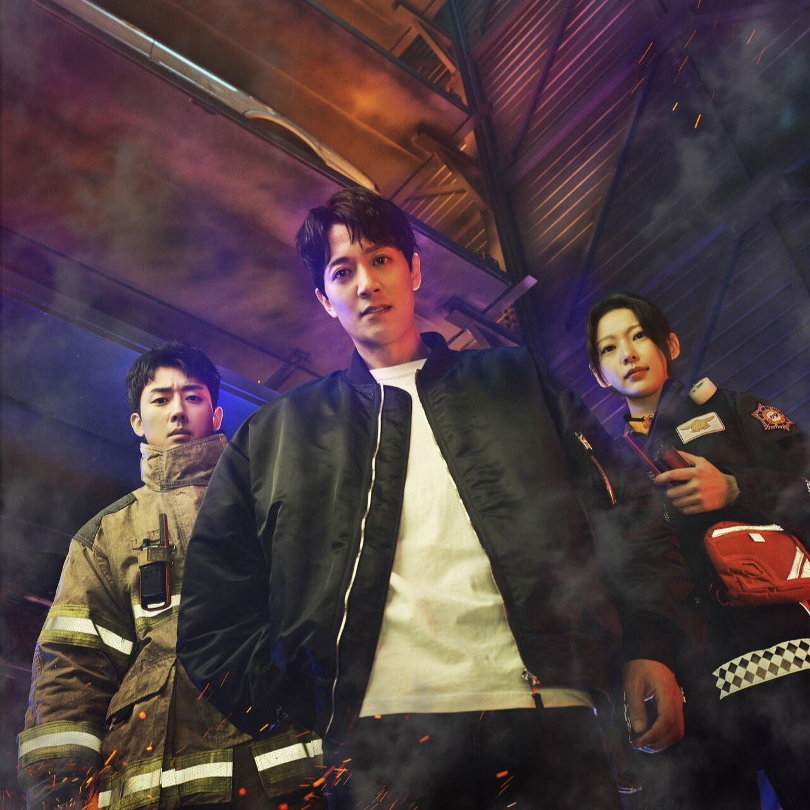

The First Responden
Menceritakan tentang kisah seorang detektif, petugas pemadam kebakaran, dan paramedis yang bekerja sama untuk membantu warga kota dengan segala tantangan dan rintangan dalam menyelesaikan misi nya dengan membantu, berkorban dan berjuang dengan ikhlas.
Selengkapnya